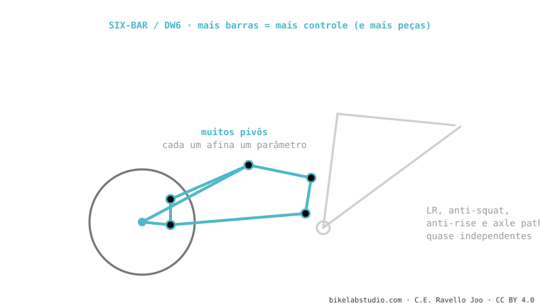

O six-bar (como o DW6 de Dave Weagle) usa seis barras articuladas em vez de quatro. Para quê? Para ajustar o leverage ratio, o anti-squat, o anti-rise e o axle path quase separadamente, sem sacrificar um para melhorar outro. O preço: mais peso, mais rolamentos, mais complexidade. Usam Atherton (DW6) e projetos de alta gama. É o mais complexo dos sistemas.
Se um quatro barras é um instrumento com quatro botões, o six-bar tem seis: mais controle, mas mais coisas para ajustar e manter.

Para ajustar LR, anti-squat, anti-rise e axle path de forma mais independente, sem sacrificar um pelo outro. Custa peso e complexidade.
Só se o projeto precisa resolver requisitos contraditórios (e-bikes, packaging difícil). Para muitas bikes, um bom 4 barras basta.
Diga como você pedala e dizemos qual cinemática te convém de verdade. Fale conosco pelo WhatsApp
© 2026 BikeLab Studio. Conteúdo sob CC BY 4.0: você pode copiar, traduzir e publicar, inclusive com fins comerciais. A citação é obrigatória. Sem atribuição, a licença é revogada automaticamente (CC BY 4.0, §6.a) e o uso passa a ser violação de direitos autorais: solicitamos a retirada do conteúdo e sua desindexação. · Design e propriedade: Carlos Ravello Joo